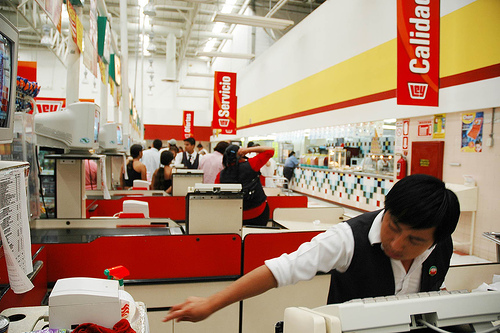
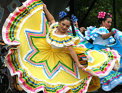

Compras Hispanas 670,000 Millones de Dólares
El crecimiento de la comunidad hispana y el aumento gradual de su poder adquisitivo se nota y arrastrará cada vez más el interés de las grandes empresas. Las familias hispanas aumentarán en los próximos seis años su poder adquisitivo hasta los 670,000 millones de dólares, lo que les ha colocado en el punto de mira de todo tipo de compañías. Según un estudio del instituto de estudios The Conference Board, actualmente existen 10.5 millones de familias hispanas en los Estados Unidos, cifra que se verá elevada en el 2013 hasta los 14.5 millones. Por familias hispanas se entiende, según la definición de este estudio, a las formadas por personas procedentes de México, Puerto Rico, Cuba y República Dominicana, además de Centroamérica, Sudamérica y España.
Vista al futuro
Dentro de seis años es decir en el 2016, el ingreso familiar será de 670.000 millones de dólares, la mayor parte de esta suma, 409.000 millones de dólares, corresponderán a familias mexicanas, el mayor grupo hispano en Estados Unidos. Otros colectivos o grupos destacados por su poder de compra serán los puertorriqueños, con 65.000 millones de dólares, y los cubanos, con 32.00 millones.
Las familias hispanas son más jóvenes que el resto de la población general de Estados Unidos, como muestra el hecho de que el 38 por ciento tiene una cabeza de familia menor de 35 años, cuando el promedio del país es del 23 por ciento. Un 25 por ciento adicional de los cabeza de familia hispanos están entre los 35 y los 44 años de edad, lo que también marca una diferencia con el resto de Estados Unidos.
Para el año 2013, calcula el Conference Board, el mercado hispano de personas menores de 45 años de edad aumentará a 10 millones de familias, y su poder adquisitivo saltará del nivel actual (menos de 295.000 millones de dólares) a un total de 397.00 millones. Esto supone que 3 de cada 5 dólares que ganen las familias hispanas en el 2013, estarán en manos de ese grupo más joven, lo que abre prometedoras expectativas para las empresas de consumo que trabajan en este segmento de la población. Para la directora del Conference Board, Lynn Franco, "a medida que el mercado hispano siga creciendo, tanto en tamaño como en poder adquisitivo, las empresas de una amplia variedad de industrias tendrán importantes oportunidades de marketing". No obstante, también apuntó que, ya que "ese joven y creciente mercado es extremadamente diverso, los expertos en mercado deben estar alerta de las extensas diferencias demográficas y económicas entre la población de familias hispanas".
Grupos de hispanos mayoritarios
La comunidad mexicana es el mayor grupo hispano con 6.5 millones de familias, más del 80 por ciento de las cuales están en las regiones del Pacífico, y el centro y sur del país. Además, este grupo destaca por su juventud frente al resto, pues se calcula que más del 66 por ciento de las familias están formadas por personas de 45 años. El Conference Board calcula que en el 2013, el colectivo de mexicanos habrá alcanzado los 8.5 millones de familias, con un poder de compra que sobrepasará los 409.000 millones de dólares. 
El segundo mayor grupo de la comunidad hispana es el procedente de Centroamérica y Suramérica, con 1.6 millones de familias, que están concentradas en las regiones del Pacífico, Atlántico sur y Atlántico medio. Este grupo alcanzará dentro de seis años los dos millones de familias, con un poder de compra de 107.000 millones de dólares, frente a los 76.000 millones actuales.
El tercer grupo es el puertorriqueño, que representan 1.2 millones del total y alcanzarán los 1.5 millones en el 2013, seguido de los cubanos con 511. 00 familias, que destacan por su mayor edad, pues la mayoría están lideradas por mayores de 55 años.